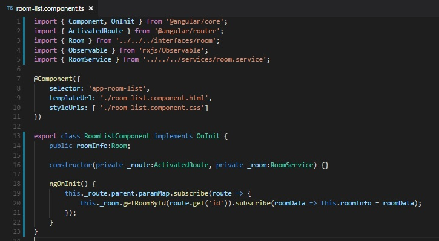
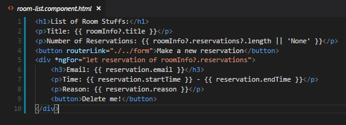

Now that we know how to get our room data, we can put together our reservation list. This should be relatively simple with one catch that we'll get to. But first things first:
The reason we have to do this is that is because anytime we create a new module, we are creating a blank slate. This means we don't have access to our basic directives like *ngIf and *ngFor. In our base module, that is handled when we imported BrowserModule, but BrowserModule has a whole host of things that we don't need. Enter CommonModule which contains all our basic directives without anything extra. Make sure to import it up top in your room.module.ts and add it to your imports array.
We've already gotten our room info once, so we should be able to do it again fairly easily. We can still subscribe to parameters in our activated route to act as our trigger to get information from the room service. Bring in both the room service and ActivateRoute and inject them both via the constructor. Create a variable of type Room that will hold our room informations, I called mine roomInfo. Go ahead and bring in OnInit, declare your class as using it with implements and create an ngOnInit method. We will be working inside the ngOnInit.
With that all done, we should be able to suscribe to .paramMap on our activated route right? Not so fast, that wont work. Why?
Because the router hates me?
The router doesn't hate you. The reason is because we aren't on the base router anymore. Allow me to explain:
When we were on the room component, those results were being displayed in the router-outlet of our base component right? Because it was only the first router outlet, this means the room component is part of the base router.
But that doesn't apply to our room list component: Those results are being displayed in the router outlet that we made inside the room component. It's in a router-outlet inside a router-outlet. (Router-outlet-ception!). Because it is a second-level router-outlet the room list is part of a child route. If we try to get the parameters as is, we will get the parameter of our child route. That's not what we want, our child route doesn't even have any parameters.
So how can we go back to the base router from a child route? The answer is actually quite simple: Tack on a .parent right before our paramMap like this.
this._route.parent.subscribe()
Now we're going to the parent of this child route, which is our base route. Awesome! Lets get that data in our subscribe as assign it to the variable we made.
this._route.parent.paramMap.subscribe( routeParam => {
});
Now that we have our route parameter, we can call the room service the same way as before:
this._route.parent.paramMap.subscribe( routeParam => {
this._room.getRoomById(route.get('id')).subscribe(roomData => this.roomInfo = roomData);
});
We're calling the room service, passing in the result of our paramMap and using the .get the same way we did before to get the parameter titled id. We then subscribe to the result and assign the result to our variable. You can expand this to also console log the roomData if you want. Here's the final result of my room list .ts file:
We've got our room info, now the fun part, we get to display it!
My version of the html will be super basic. Style and display yours however you see fit.
I start with a basic header and I display the title:
<h1>List of Room Stuffs:</h1>
<p>Title: {{ roomInfo?.title }}</p>
Do you remember why we need to use the question mark?
When the page loads and immediately displays the html, it hasn't finished it's request for the room information because its happening asynchronously. By inserting the question mark, we are telling the browser to not flip out if there's nothing there, but where there is, display the title.
That's good and all, lets display the amount of reservations first. We know our reservations property is an array, so we can use .length to display how may items are in that array, which is exactly what we want:
<h1>List of Room Stuffs:</h1>
<p>Title: {{ roomInfo?.title }}</p>
<p>Number of reservations: {{ roomInfo?.reservations?.length || 'None' }}</p>
This time I also had to put a question mark on the reservations as well; it's entirely possible that the array is empty. I also used a double pipe to display a value should that return falsy. Now if there are no reservations, instead of displaying 0, it says 'None'. I thought it was a nice touch...
Now let's add a button that will send someone to the room form if they want to add a reservation. If you chose to put your form link in your room component, you can skip this step:
<h1>List of Room Stuffs:</h1>
<p>Title: {{ roomInfo?.title }}</p>
<p>Number of reservations: {{ roomInfo?.reservations?.length || 'None' }}</p>
<button routerLink="./../form">Make a Reservation</button>
Remember to use routerLink instead of href! Also note I had to throw in the double dots to make sure I go back a level, otherwise i would end up at room/(roomid)/list/form which would be madness.
Now for the meaty party of our list: the actual reservation. Now that we have an array, we can go over the reservations with *ngFor:
<h1>List of Room Stuffs:</h1>
<p>Title: {{ roomInfo?.title }}</p>
<p>Number of reservations: {{ roomInfo?.reservations?.length || 'None' }}</p>
<button routerLink="./../form">Make a Reservation</button>
<div *ngFor="let reservation of roomInfo?.reservations"></div>
We didn't need the question mark on our reservations because if they dont exist, the loop will just not run.
Now we just need to throw our reservation array info. This should take you back to the card picker. Here's my end result:
Notice I created a button for each reservation to delete. We'll worry about making that functional later, but for now make sure to include the button.
Room list complete!
Next up will be our introduction to forms, which is a pretty meaty topic.